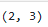
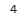
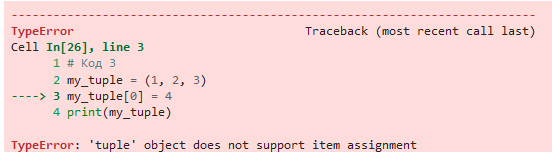
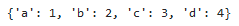

# results = (80, 75, 90)
average_score = sum(results) / len(results)
max_score = max(results)
print(f"Середній бал: {average_score}")
print(f"Максимальний бал: {max_score}")Середній бал: 81.66666666666667
Максимальний бал: 90author: “© Oleksandr Maltsev , date:”19.09.2024”
Мета: навчитися працювати зі структурами даних Кортеж та Словник. Навчитись обробляти основні типи винятків
Попередньо потрібно опрацювати лекцію 7.
У лабораторній роботі використано матеріали python institute.
tuple).dict).Створіть кортеж, який містить інформацію про результати іспитів з трьох предметів для студента (наприклад, математика, фізика та хімія). Виведіть на екран середній бал та максимальний бал.
# results = (80, 75, 90)
average_score = sum(results) / len(results)
max_score = max(results)
print(f"Середній бал: {average_score}")
print(f"Максимальний бал: {max_score}")Середній бал: 81.66666666666667
Максимальний бал: 90У цьому коді ми створюємо кортеж results, який містить оцінки студента з трьох предметів. Потім ми обчислюємо середній бал, використовуючи вбудовані функції sum та len, та максимальний бал, використовуючи вбудовану функцію max. Нарешті, ми виводимо ці значення на екран за допомогою функції print. Водночас ми продемонстрували один з варіантів форматованого виводу.
Створіть програму, яка буде обчислювати площу трикутника за трьома сторонами, які користувач введе з клавіатури. Збережіть введені користувачем значення за допомогою кортежів та виведіть їх на екран.
a = float(input("Введіть довжину першої сторони трикутника: "))
b = float(input("Введіть довжину другої сторони трикутника: "))
c = float(input("Введіть довжину третьої сторони трикутника: "))
# обчислюємо півпериметр
p = (a + b + c) / 2
# обчислюємо площу трикутника за формулою Герона
area = (p * (p - a) * (p - b) * (p - c)) ** 0.5
# зберігаємо введені користувачем значення у кортеж
triangle_sides = (a, b, c)
# виводимо на екран введені користувачем значення та площу трикутника
print(f"Довжина сторін трикутника: {triangle_sides}")
print(f"Площа трикутника: {area}")Введіть довжину першої сторони трикутника: 1
Введіть довжину другої сторони трикутника: 2
Введіть довжину третьої сторони трикутника: 3Довжина сторін трикутника: (1.0, 2.0, 3.0)
Площа трикутника: 0.0У цьому прикладі ми використовуємо кортеж triangle_sides, щоб зберегти довжини трьох сторін трикутника, які введені користувачем з клавіатури.
Напишіть програму, яка змінює порядок елементів у кортежі. Користувач повинен ввести кортеж, а програма повинна вивести його елементи у зворотному порядку.
t = tuple(input("Введіть елементи кортежу, розділені комою: ").split(','))
# змінюємо порядок елементів у кортежі
reversed_t = t[::-1]
# виводимо зворотний порядок елементів на екран
print(f"Зворотний порядок елементів кортежу: {reversed_t}")Введіть елементи кортежу, розділені комою: 1, 2, 3, 4, 5Зворотний порядок елементів кортежу: (' 5', ' 4', ' 3', ' 2', '1')У цьому прикладі ми використовуємо оператор зрізу [::], щоб змінити порядок елементів у кортежі t на зворотний порядок. Потім ми виводимо на екран зворотний порядок елементів у новому кортежі reversed_t.
Наприклад, якщо користувач введе "1,2,3,4,5", програма виведе на екран: “Зворотний порядок елементів кортежу: ('5', '4', '3', '2', '1').
Напишіть програму, яка створює кортеж зі списку чисел, а потім виводить на екран всі числа, які менші за задане число n. Умова: користувач вводить число n, і щоб створити новий список result, який містить всі числа з кортежу, які менші за n, реалізувати за допомогою генератора списків.
numbers = tuple([10, 3, 15, 7, 20, 5, 12])
n = int(input("Введіть число n: "))
result = [num for num in numbers if num < n]
print("Числа з кортежу, менші за", n, ":", result)Введіть число n: 32Числа з кортежу, менші за 32 : [10, 3, 15, 7, 20, 5, 12]Напишіть програму, яка створює кортеж з трьох елементів, які є рядками, та з’єднує їх в один рядок з комою як роздільником. Примітка: з’єднати рядки також можна за допомогою методу .joint()
strings = ("яблуко", "банан", "вишня")
result = ", ".join(strings)
print("З'єднаний рядок:", result)З'єднаний рядок: яблуко, банан, вишняСтворіть словник, який містить інформацію про книги в бібліотеці. Ключами будуть назви книг, а значеннями - автори, рік видання та кількість сторінок. Виведіть на екран інформацію про книгу, введену користувачем.
library = {
"Кобзар": {"author": "Тарас Шевченко", "year": 1840, "pages": 400},
"Гайдамаки": {"author": "Тарас Шевченко", "year": 1841, "pages": 250},
"Місто": {"author": "Валер'ян Підмогильний", "year": 1928, "pages": 280},
"Тигролови": {"author": "Іван Багряний", "year": 1944, "pages": 320}
}
# Запитуємо у користувача назву книги
book_name = input("Введіть назву книги: ")
# Перевіряємо, чи є така книга в бібліотеці
if book_name in library:
book_info = library[book_name]
print(f"Інформація про книгу '{book_name}':")
print(f"Автор: {book_info['author']}")
print(f"Рік видання: {book_info['year']}")
print(f"Кількість сторінок: {book_info['pages']}")
else:
print(f"Книга '{book_name}' не знайдена в бібліотеці.")Введіть назву книги: КобзарІнформація про книгу 'Кобзар':
Автор: Тарас Шевченко
Рік видання: 1840
Кількість сторінок: 400Написати програму, яка веде облік студентів групи, забезпечуючи можливість зберігати ім’я і прізвище студента та його оцінки, і виводить середній бал по предметах.
# school_class = {}
# while True:
# name = input("Enter the student's name: ")
# if name == '':
# break
# score = int(input("Enter the student's score (0-10): "))
# if score not in range(0, 11):
# break
# if name in school_class:
# school_class[name] += (score,)
# else:
# school_class[name] = (score,)
# for name in sorted(school_class.keys()):
# adding = 0
# counter = 0
# for score in school_class[name]:
# adding += score
# counter += 1
# print(name, ":", adding / counter)Напишіть програму, яка створює словник, що містить інформацію про студентів, використовуючи вказані кортежі в якості значень. Кожен ключ – це прізвище студента. Виведіть на екран інформацію про студента, введеного користувачем.
students = {
"Нагоренко": ("Валера", 18, "КН"),
"Шевченко": ("Максим", 20, "АБ"),
"Коваль": ("Олена", 19, "АКІТ"),
"Залізьняк": ("Олександр", 19, "ФЗБ")
}
# Запитуємо у користувача прізвище студента
last_name = input("Введіть прізвище студента: ")
# Перевіряємо, чи є такий студент у словнику
if last_name in students:
student_info = students[last_name]
print(f"Інформація про студента '{last_name}':")
print(f"Ім'я: {student_info[0]}")
print(f"Вік: {student_info[1]}")
print(f"Факультет: {student_info[2]}")
else:
print(f"Студента з прізвищем '{last_name}' не знайдено.")Введіть прізвище студента: КовальІнформація про студента 'Коваль':
Ім'я: Олена
Вік: 19
Факультет: АКІТСтворіть словник, який містить інформацію про більше, ніж один номер телефону для кожного з контактів в телефонній книзі. Ключами будуть імена контактів, а значеннями - список їхніх номерів телефонів. Напишіть функцію, яка дозволяє додати новий номер телефону до списку номерів телефону певного контакту. Потім виведіть на екран список номерів телефонів для всіх контактів.
phone_book = {
"ПриватБанк": ["880-330-605"],
"Олег": ["456-634-324", "505-657-787"],
"Валера": ["117-242-331"]
}
def add_pnumber(name, phone_number):
if name in phone_book:
phone_book[name].append(phone_number)
else:
phone_book[name] = [phone_number]
add_pnumber("Сергей", "555-123-456")
add_pnumber("Марк", "777-888-999")
for name, phones in phone_book.items():
print(f"{name}: {', '.join(phones)}")ПриватБанк: 880-330-605
Олег: 456-634-324, 505-657-787
Валера: 117-242-331
Сергей: 555-123-456
Марк: 777-888-999Виконати завдання 1-5 наведені вище у цьому зошиті.
Створити файл lab_7_StudentLastName.py з написаним кодом.
Закомітити файл у локальний репозиторій.
Відправити (“запушити”) поточну версію Git-проєкта у віддалений репозиторій на GitHub.
Звіт має складатися з файлу (за основу взяти цей Python-зошит) lab_7_StudentLastName.ipynb. (Можливі якісь додакові файли)
my_tuple = (1, 2, 3)
print(my_tuple[1:])my_dict = {'a': 1, 'b': 2, 'c': 3}
print(my_dict.get('d', 4))my_tuple = (1, 2, 3)
my_tuple[0] = 4
print(my_tuple)my_dict = {'a': 1, 'b': 2, 'c': 3}
my_dict.update({'d': 4})
print(my_dict)
Що виведе наступний код? 
Що виведе наступний код? 
Що виведе наступний код? 
(2, 3)